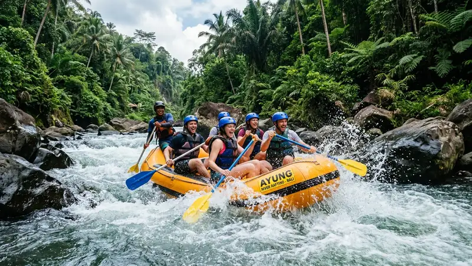

Kisaran harga paket rafting di Malang dibedakan berdasarkan jarak tempuh sungai, jumlah peserta, dan fasilitas tambahan yang disediakan masing-masing operator.
- Harga paket rafting umumnya mengikuti jarak tempuh, semakin panjang rute maka semakin tinggi harganya.
- Jumlah peserta dalam satu rombongan dapat memengaruhi harga per orang.
- Fasilitas tambahan seperti dokumentasi dan makan siang biasanya dikenakan biaya terpisah.
- Sebagian operator menawarkan paket khusus untuk rombongan besar dengan harga yang disesuaikan.
Harga paket rafting di Malang bervariasi antar operator karena perbedaan fasilitas, jarak tempuh, dan layanan tambahan yang ditawarkan. Perbandingan harga antar operator dapat membantu wisatawan menentukan paket yang paling sesuai dengan kebutuhan dan anggaran perjalanan.
Berapa Kisaran Harga Paket Rafting di Malang
Kisaran harga paket rafting di Malang umumnya dibedakan menjadi beberapa tingkatan sesuai jarak tempuh, mulai dari paket rute pendek hingga paket rute panjang dengan harga yang meningkat seiring durasi kegiatan.
Setiap operator biasanya menetapkan harga dasar untuk paket standar yang mencakup penggunaan perahu, pelampung, helm, dan instruktur pendamping. Wisatawan disarankan menanyakan rincian harga secara langsung kepada operator karena penyesuaian dapat terjadi mengikuti periode tertentu, seperti musim liburan atau akhir pekan.
Apakah Harga Rafting Berbeda di Hari Kerja dan Akhir Pekan
Sebagian operator menerapkan harga yang relatif sama antara hari kerja dan akhir pekan, namun ketersediaan slot keberangkatan pada akhir pekan cenderung lebih terbatas karena tingginya jumlah peminat. Melakukan reservasi lebih awal pada akhir pekan atau musim liburan dapat membantu memastikan ketersediaan jadwal yang diinginkan.
Apa Saja Faktor yang Memengaruhi Harga Paket Rafting
Faktor yang memengaruhi harga paket rafting di Malang meliputi jarak tempuh sungai, jumlah peserta dalam rombongan, serta fasilitas tambahan seperti dokumentasi foto, video, dan layanan makan siang.
Operator dengan fasilitas pendukung yang lebih lengkap, seperti transportasi antar-jemput dari titik kumpul tertentu, umumnya menetapkan harga yang sedikit lebih tinggi dibandingkan paket standar tanpa layanan tambahan. Peserta juga perlu mempertimbangkan biaya tambahan seperti sewa loker atau penitipan barang apabila tidak termasuk dalam paket dasar.
Apakah Ada Biaya Tambahan di Luar Paket Rafting
Beberapa operator mengenakan biaya tambahan di luar paket dasar untuk layanan seperti dokumentasi profesional, sewa pakaian ganti, atau konsumsi tambahan di luar yang sudah termasuk dalam paket. Sebaiknya wisatawan menanyakan rincian biaya secara menyeluruh sebelum melakukan reservasi agar tidak terjadi kesalahpahaman terkait total biaya yang harus dibayarkan.
Apakah Tersedia Paket Khusus untuk Rombongan
Sebagian besar operator rafting di Malang menyediakan paket khusus untuk rombongan besar, seperti kelompok komunitas, instansi, atau acara sekolah, dengan penyesuaian harga per orang berdasarkan jumlah peserta.
Paket rombongan biasanya turut mencakup fasilitas tambahan seperti area istirahat khusus atau konsumsi bersama yang disesuaikan dengan jumlah peserta. Wisatawan yang berencana membawa rombongan besar disarankan melakukan reservasi jauh-jauh hari agar operator dapat mempersiapkan jumlah perahu dan instruktur yang memadai.
Bagaimana Cara Menghitung Estimasi Total Biaya Rafting Rombongan
Estimasi total biaya rafting rombongan dapat dihitung dengan mengalikan harga paket per orang dengan jumlah peserta, kemudian ditambahkan biaya fasilitas tambahan apabila diperlukan, seperti dokumentasi atau konsumsi. Beberapa operator juga menawarkan potongan harga khusus untuk jumlah peserta tertentu, sehingga ada baiknya dikonfirmasi langsung saat melakukan reservasi.
FAQ
Apakah harga paket rafting di Malang sudah termasuk perlengkapan keselamatan?
Sebagian besar paket rafting di Malang sudah mencakup perlengkapan keselamatan dasar seperti pelampung dan helm dalam harga paket standar.
Apakah ada diskon untuk paket rombongan besar?
Beberapa operator menawarkan penyesuaian harga untuk rombongan besar, namun besaran diskon dapat berbeda-beda tergantung kebijakan masing-masing operator.
Apakah harga rafting Malang termasuk makan siang?
Sebagian paket sudah mencakup makan siang, sementara paket lain mengenakannya sebagai biaya tambahan, sehingga sebaiknya dikonfirmasi terlebih dahulu.
Arya
Penulis artikel yang sudah berpengalaman di dalam dunia wisata outbound Batu Malang.